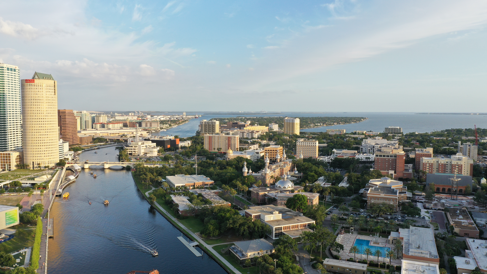

Spreading Awareness
Spread Awareness throughout your community. Warn peers about the current threat of rising water levels and why it is important we stop it.
Teaching Community
Educate the community about why water levels are rising, the damage and risk this causes, and what solutions we can implement to mitigate the effects.

Implement Solutions
Actively incorporating solutions is the best way of mitigating rising water levels. There are many organizations in Tampa Bay that work together to address flooding and environmental impacts.
Even actions as small as creating natural irregation in your garden counts!